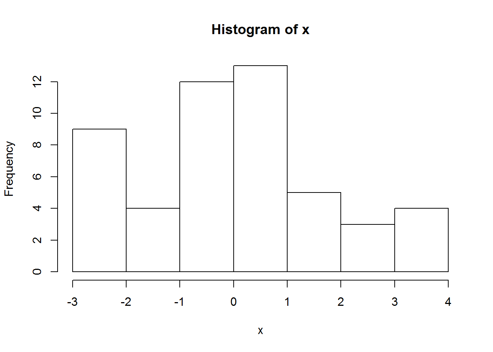

Discussion topic: SECR in JAGS for woodrats Discussion leader: Kevin Shoemaker and Elizabeth Hunter We will discuss a model for estimating survival and movement propensity for two species of woodrats within a hybrid zone. We are using a modified CJS model in a spatially-explicit capture-recapture (secr) framework.
Discussion topic: Mixed effects modeling. Although Pinhiero and Bates suggest that LRT is appropriate for mixed effects models, we are still unsure how to compute the degrees of freedom for the Chi-squared distribution that describes the null hypothesis. We are also wondering exactly why it is not recommended to use information criteria to compare models with different random effects structures. Paul mentioned the possibility of generating null distributions for such questions and seeing how well they match with the Chi-squared distribution recommended by pinhiero and bates.. Phillip mentioned that Ken Burnham “solved” this issue by using the trace of the “G-matrix” to approximate the number of free parameters in the model.
Here are some links with good guidance!!
Discussion leader: Jessi Brown, Chris Vennum We discussed what you can do with mixed models once you have fitted them using something like “lmer” from the “lme4” package in R. In partucular, we discussed how to use R to bootstrap predictions from mixed effects models and whether confidence intervals from lmer compared favorably with those from a Bayesian modeling approach in JAGS.
Leader: Chris Vennum We continued our discussion of linear mixed models- in particular, we discussed (1) strategies for evaluating the normality of residuals if the random effect terms do most of the explaining, and (2) whether parameter estimation breaks down if some or all predictor variables are perfectly correlated with a “group” variable (all sampling units within a group share the same covariate value). For the latter case, using a simulation (below), Thomas Riecke demonstrated that the REML algorithm in “lmer” was able to estimate fixed effects terms appropriately.
#########################################################################
# group number, cluster size
#########################################################################
groups <- 50
cluster <- 5
#########################################################################
# generate random groups
#########################################################################
random <- seq(1,groups,1) # 100 random groups
data <- data.frame(rep(random, each = cluster)) # build a data.frame with 10 observations per cluster
#########################################################################
# generate 100 covariate values
#########################################################################
x <- rnorm(groups, 0, 2); hist(x)
data[,2] <- NA
#########################################################################
# assign covariate values to groups... all the same
#########################################################################
for (i in 1:nrow(data)){
data[i,2] <- x[data[i,1]]
}
#########################################################################
# generate data with noise
#########################################################################
alpha <- 5
beta <- 1
data[,3] <- alpha + data[,2] * beta + rnorm(groups * cluster, 0, 3)
par(family = 'serif', mar = c(5.1,5.1,2.1,2.1))
plot(data[,3] ~ data[,2], ylab = 'Response', xlab = 'Covariate', cex.lab = 2)
#########################################################################
# assign less ridiculous column names
#########################################################################
colnames(data) <- c('group', 'covariate', 'response')
library(lme4)## Loading required package: Matrixsummary(lmer(response ~ covariate + (1|group), data = data))## Linear mixed model fit by REML ['lmerMod']
## Formula: response ~ covariate + (1 | group)
## Data: data
##
## REML criterion at convergence: 1260.6
##
## Scaled residuals:
## Min 1Q Median 3Q Max
## -3.09683 -0.65059 0.00139 0.67361 2.68601
##
## Random effects:
## Groups Name Variance Std.Dev.
## group (Intercept) 0.07341 0.2709
## Residual 8.91954 2.9866
## Number of obs: 250, groups: group, 50
##
## Fixed effects:
## Estimate Std. Error t value
## (Intercept) 4.8986 0.1927 25.416
## covariate 1.0953 0.1112 9.849
##
## Correlation of Fixed Effects:
## (Intr)
## covariate 0.000Since no one came with questions, we discussed mixed models. Several ‘stats chats’ participants over the last year have raised the question of how to determine the ‘significance’ of random effects, and how to decide whether to keep or remove specific random effects from a (generalized) linear mixed model. We discussed the possibility of running bootstrap tests in R to determine whether more variance is explained by the random effect than would be predicted on the basis of random chance. Paul raised the question of whether you can test for abnormal random effects distributions- e.g., bimodal distributions. We will continue this discussion next week…
Since no one came with questions, we discussed the quantitative curriculum at UNR for graduate students and undergraduates. We started out by wondering aloud if coding and quantitive analysis could be embedded in the curriculum so that students had more exposure to these tools in many different contexts. Some key points of our discussion: